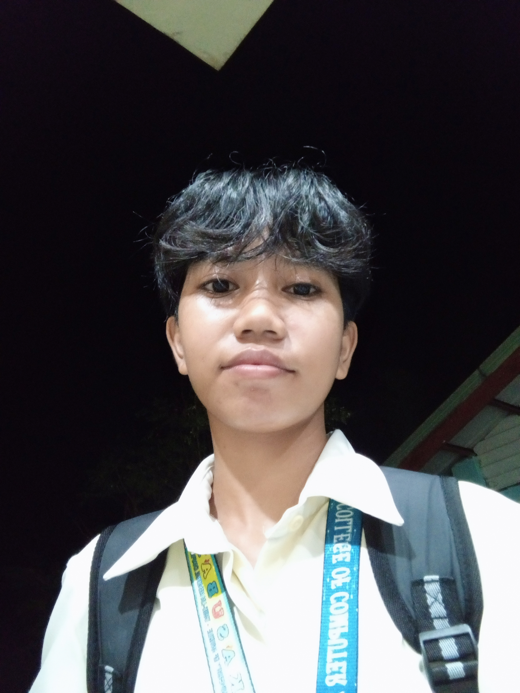
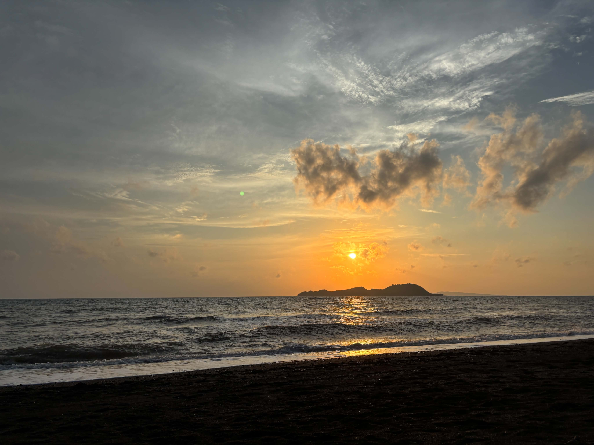

🎶 Now Playing — My Favorite Song 💜
Hi! I’m Angela Marie T Dela Cruz, a 2nd‑year student from beautiful Malacañang, Culasi, Antique. I love exploring how technology shapes our world — building systems that help people, communities, and local organizations grow.

I’m currently a 2nd‑year college student taking up Bachelor of Science in Information Systems. I live in Malacañang, Culasi — a peaceful, beautiful place right here in the province of Antique. My course blends information technology with business and management — learning how to design, build, and maintain systems that organize, process, and secure information effectively for people and organizations.
Right now I’m building my foundation in HTML, CSS, programming, database management, and system analysis. My goal is to become a skilled IT professional who creates practical, useful information systems that make work easier, faster, and better organized — especially for communities and offices here in Antique. Technology should serve everyone, and I want to be part of that future.

| Name | URL | Description |
|---|---|---|
| 📚 MDN Web Docs | developer.mozilla.org | Trusted, detailed reference for HTML, CSS, and web standards — always accurate. |
| 📖 W3Schools | w3schools.com | Simple, step‑by‑step tutorials — perfect for beginners and quick practice. |
| 🎓 freeCodeCamp | freecodecamp.org | Learn to code completely free — full courses, projects, and certifications. |
My pretty girlfriend. 💜